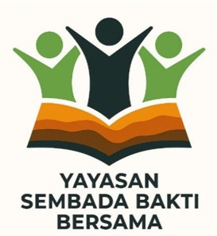
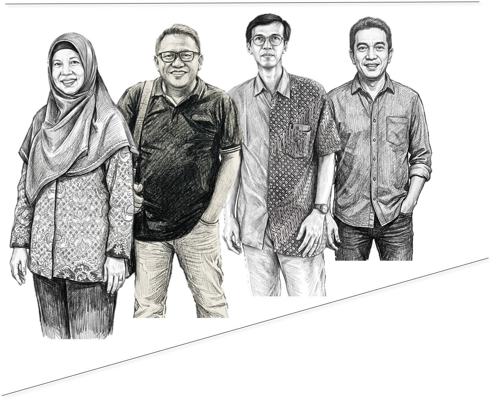

VIVA TAMBANG 92!
Logo Yayasan Sembada Bakti Bersama terdapat elemen lapisan geologi yang menggambarkan akar keilmuan para pendiri yayasan dari dunia pertambangan. Lapisan geologi di bawah figur manusia dan buku terbuka melambangkan kedalaman ilmu, fondasi kuat, dan proses bertahap dalam membangun masa depan. Warna oranye dan coklat digunakan untuk merepresentasikan tanah, batuan, dan semangat pertambangan. Figur manusia tetap melambangkan kebersamaan dan pengabdian.- Warna hijau muda dan hijau tua digunakan untuk merepresentasikan bertumbuh dan berkembang, keasrian dan pelestarian, terus memberi manfaat kehidupan. Simbol buku terbuka sebagai simbol pendidikan tetap menjadi pusat dari filosofi yayasan.Logo ini kini tidak hanya mencerminkan nilai sosial dan pendidikan, tapi juga menghormati latar belakang keilmuan para pendirinya.

Rika, Catur, Anto dan Yusi
Klik untuk melihat transformasi ala James Bond 007